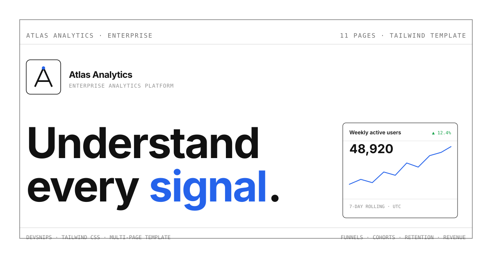

Atlas Analytics — understand every signal.
A flagship 11-page Tailwind CSS product-analytics application template. Minimal, light, editorial and data-dense — eleven independently-usable pages sharing one shell, no framework, build step or backend.

All eleven pages
A complete analytics product.
Eleven independently-usable application pages sharing one Atlas shell — open any page and navigate the whole product with plain relative links.
Overview
KPI grid with sparklines, weekly active-users chart, top traffic sources, recent activity.
Analytics
Metric trend with range/metric switching, events table, event distribution bars.
Funnels
4-stage conversion funnel with per-stage drop-off, step table and compare-period toggle.
Cohorts
Triangular weekly retention heatmap with percentage cells and cohort size column.
Retention
Overlapping retention curves by cohort with legend and N-week retention table.
Revenue
MRR/ARR KPIs, revenue trend area chart, plan breakdown, recent transactions.
Reports
Saved report cards with schedule badges, last-run metadata and a report builder.
Dashboards
Custom dashboard widget grid with KPIs, a wide chart, top sources and an add-widget empty state.
Segments
Audience segment table with size, composition, status and 30-day trend sparkline.
Events
Event frequency table, naming-convention guidance and a copyable sample payload.
Settings
Tabbed workspace/general/billing with form controls, toggles, members and a danger zone.
Design system
Minimal, editorial, restrained.
The opposite of a glassy, neon dashboard. Hierarchy from typography, spacing and 1px borders — a single controlled blue accent, calm dark mode, no gradients or glow.
Neutral palette + accent
Neutral-first; blue for emphasis only.
Typography
Inter for display + body, JetBrains Mono for metrics.
Display · 36 / 600
Weekly active users
Body · 14 / 400
A snapshot of product health across the last 30 days.
Mono · 13 / 500
48,920 · ▲ 12.4%
The Atlas shell
Shared topbar + sidebar + dark mode, inlined per page.
Analyze
Overview
Analytics
Funnels
Cohorts
Build
Reports
Dashboards
Composition
A reference for how pieces combine.
Atlas is a reference implementation for composition. Individual DevSnips components stay reusable, but Atlas shows developers how dozens of small pieces — KPI cards, tables, charts, tabs, drawers, a command palette — combine into a coherent product UI without a framework or build step.
- Eleven independently-usable pages linked by plain relative URLs
- Hand-built inline SVG charts — sparklines, area, bar, funnel, heatmap, curves
- Calm dark mode via CSS custom properties — never neon or glassmorphism
- Responsive sidebar drawer, command palette, ARIA tabs — all scoped vanilla JS
Weekly active users
▲ 12.4%48,920
Total
48,920
Avg / wk
6,131
Change
+12.4%
Navigate the whole product.
Open any page and move between them with plain relative links — no framework, build system, backend or JavaScript application required.